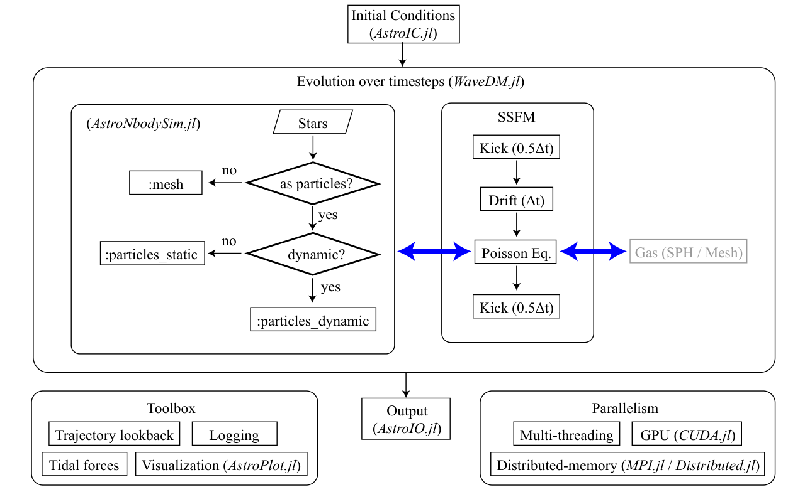
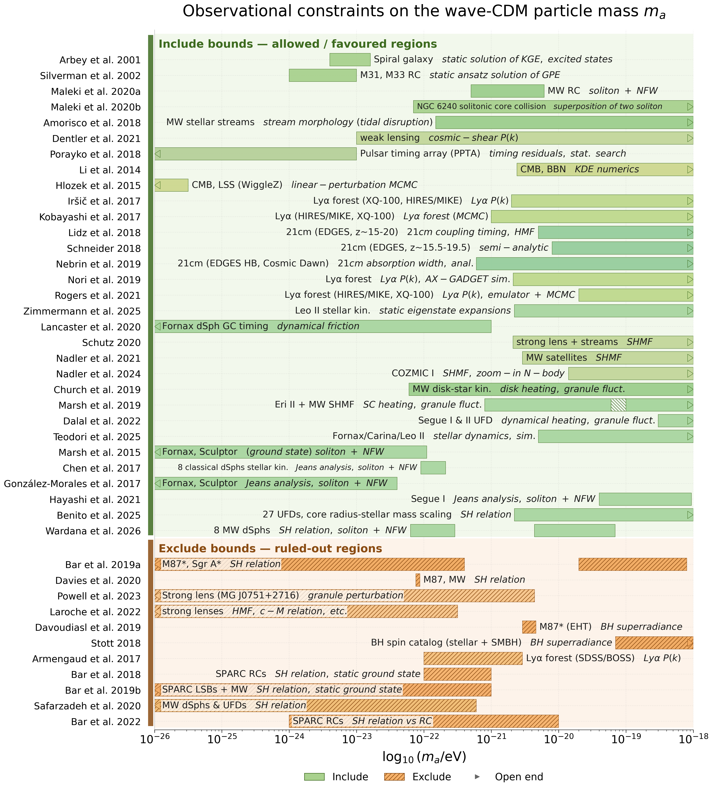

WaveDM.jl
WaveDM.jl: An Adaptable Simulation Framework for Dynamics of Baryonic and Wave Dark Matter on Galaxy Scales
WaveDM.jl is an open-source Julia package for high-performance simulations of wave (fuzzy) dark matter dynamics on galaxy scales. The code solves the time-dependent Schrödinger–Poisson equation (SPE) using a pseudo-spectral split-step Fourier method, with a design philosophy centered on adaptability and extensibility.
The spectral solver is tightly integrated with N-body gravitational force solvers, enabling simultaneous evolution of wave dark matter and baryonic components in galaxy-scale simulations. A unified multi-level parallelization framework brings shared-memory, distributed-memory, and GPU execution into a single workflow. The same code runs across CPU, multi-threaded, and GPU configurations; distributed workers currently accelerate initial-condition generation and N-body work, while the full SPE loop runs on a single process in this release. A dedicated galaxy-simulation toolbox — built on AstroIC.jl, AstroNbodySim.jl, and AstroPlot.jl — bundles flexible initial condition generators, trajectory lookback, tidal force calculations, and real-time visualization.
Beyond astrophysics, the code's modular architecture supports cross-disciplinary studies in nonlinear optics and cold-atom physics through a generalized nonlinear Schrödinger interface.
Three Key Capabilities
- Coupled wave + N-body evolution. The SPE solver evolves the bosonic field $\psi$ on a uniform grid, while
AstroNbodySim.jlsimultaneously evolves baryonic particles (static or fully dynamic) and computes their gravitational coupling to the wave dark matter. Time-dependent tidal fields from a host halo and external perturbers (e.g. the LMC) are supported. - Multi-level parallel execution. Shared-memory multi-threading, distributed-memory parallelism via Julia's native
Distributed.jl, and GPU acceleration viaCUDA.jlare all exposed through simple keyword arguments (-t N,distributed_memory=true,gpu=true). The same script runs unchanged from a laptop to a multi-node cluster. - Galaxy-simulation toolbox. Ready-to-use density profiles (gNFW, NFW, Zhao), Milky-Way and SPARC initial conditions, Milky-Way satellite trajectory lookback (Battaglia 2022), MW / LMC tidal fields, on-the-fly virial and energy diagnostics, and interactive 2D/3D visualization via
GLMakie.jl(and terminal-basedUnicodePlots.jlfor headless runs).
Quick Start
The minimum useful script — wave CDM evolution of a Crater II-like ultra-faint dwarf:
using WaveDM
using Unitful
simulate_waveDM(;
model = :dwarf_UFDs,
Galaxy_id = 6, # Crater II
baryon_mode = :ignored, # Crater II is dark-matter dominated
mₐ = 50 * 1e-22 * 1.783e-36u"kg", # m₂₂ = 50
V = (x, y, z, ψ) -> 0.0, # external potential
Nx = 384, # mesh size
Xmax = 20u"kpc", # half-side length, L = 2*Xmax
Tmax = 6.0u"Gyr",
autoset_timestep = true,
bulk_size = 4, # value used in the paper
gpu = true,
Realtime = true,
)See Examples for additional end-to-end cases (Crater II with the MW tidal field, MW+LMC trajectory lookback, distributed-memory IC generation, GPU performance).
Architecture

Figure 1 — Architecture of WaveDM.jl. The framework integrates four core components (reproduced from the accompanying paper, Meng & Dong 2026):
- a pseudo-spectral split-step Fourier method (SSFM) solver for the SPE, evolving $\psi$ with a second-order kick–drift–kick (KDK) scheme;
- an optional baryonic physics module (
AstroNbodySim.jl) with mesh-based and particle-based treatments (baryon_mode = :ignored | :mesh | :particles_static | :particles_dynamic), supporting bothDirectSum($\mathcal{O}(N^2)$) andTree($\mathcal{O}(N \log N)$, Gadget-2 scheme) gravity solvers; - a galaxy-simulation toolbox providing trajectory lookback, tidal-field evaluation, logging, real-time visualization (
AstroPlot.jl), and post-processing; - a multi-level parallel framework combining multi-threading, distributed-memory (Julia's
Distributed.jlwith TCP/IP transport), and GPU acceleration (CUDA.jl).
Initial conditions are generated by AstroIC.jl; snapshot I/O is handled by AstroIO.jl. Gas dynamics via SPH is planned for a future release. MPI support is also planned as an alternative communication backend to Distributed.jl.
Observational constraints on the ultralight dark-matter mass
WaveDM.jl is designed for halo-scale simulations of fuzzy / wave dark matter, and a substantial literature already constrains the particle mass $m_a$ across more than nine orders of magnitude. The table below summarises 42 observational and theoretical bounds from the literature, grouped by data type.

Static PNG (click to enlarge). The rows follow the order of ma_constraints.tex and are split into Include bounds — allowed / favoured regions (green) and Exclude bounds — ruled-out regions (orange, hatched); within each group the shade of the bar encodes the dataset family (rotation curves, dwarf galaxies, Lyα forest, 21 cm, CMB, lensing, black holes, …) and a dashed guide marks every row. Every paper occupies exactly one row: works that quote two intervals (Bar et al. 2019, Marsh et al. 2019, Wardana et al. 2026 …) draw two bars on that row, and two *different papers that share an author–year label get a / b suffixes. The data — method annotation of each bar uses standard abbreviations (RC = rotation curve, SH relation = soliton–halo relation, SHMF = subhalo mass function, Lyα P(k) = Lyα flux power spectrum); an arrowhead marks a bound that continues past the plotted range, and a hatched cap marks a bound whose quoted value is itself a range (Marsh & Niemeyer 2019). For a copy-able vector version use ma_constraints.pdf.*
For the interactive version — hover any bar to see the citekey, year, title, authors, journal, DOI/arXiv link, raw constraint, and the bounding interval in $\log_{10}(m_a/\mathrm{eV})$ — open the plotly figure:
<iframe src="../assets/ma_constraints.html" width="100%" height="980" frameborder="0" loading="lazy" style="border:1px solid #ddd"></iframe>
A lightweight fallback (pure SVG, no JavaScript) is also available; click any rectangle in ma_constraints.svg to open the paper DOI in a new tab.

The raw constraint table is in docs/constraints/ma_constraints.tex; the structured dataset is in docs/constraints/output/ma_constraints.yaml; see docs/constraints/README.md for how the figure is regenerated.
When to use WaveDM.jl
| If you need … | WaveDM.jl provides … |
|---|---|
| Galaxy-scale SPE simulations with realistic halo potentials | model = :MW, :dwarf, :dwarf_NFW, :dwarf_Zhao, :Elliptical, :cluster_NFW, :cluster_Burkert; gNFW / NFW / Zhao / β-model / Jaffe profiles; the Milky-Way mass model (Zhu 2023); Crater II preset (model = :dwarf_UFDs, Galaxy_id = 6; for profile fitting set target_profile_model = :dwarf_Zhao and pass the Crater II target_profile_* parameters from AstroIC.load_data_UFDs()) |
| Tidal stripping of a satellite under a live host | MW_tidal_field=true, optional LMC_tidal_field=true |
| Backward orbital integration of a satellite | AstroIC.load_data_MW_satellites() + an AstroNbodySim.Simulation |
| Self-interacting wave dark matter ($\kappa \neq 0$) | Pluggable V(x, y, z, ψ) + κ keyword |
| Cross-disciplinary nonlinear Schrödinger problems | Pluggable potential interface — same code base for NLO, BEC |
Documentation Navigation
- Quickstart — for first-time users; choose a model, run Crater II in under 10 minutes
- Introduction — wave dark matter background, design philosophy, ecosystem, model decision tree
- Installation — installing WaveDM.jl and its dependencies
- Algorithms — SPE, split-step Fourier method, boundary conditions, resolution and timestep criteria, virial diagnostics
- API Reference — detailed API documentation
- Examples — complete simulation examples
- References — related literature
Citation
If you use WaveDM.jl in your research, please cite the accompanying paper:
- Meng, R. & Dong, X. 2026, WaveDM.jl: An Adaptable Simulation Framework for Dynamics of Baryonic and Wave Dark Matter on Galaxy Scales, Research in Astronomy and Astrophysics — journal article · arXiv:2606.25026 · DOI 10.1088/1674-4527/ae9042
@article{meng2026wavedmjladaptablea,
title = {{{WaveDM}}.Jl: {{An Adaptable Simulation Framework}} for {{Dynamics}} of {{Baryonic}} and {{Wave Dark Matter}} on {{Galaxy Scales}}},
shorttitle = {{{WaveDM}}.Jl},
author = {Meng, Runyu and Dong, Xiaobo},
year = 2026,
journal = {Research in Astronomy and Astrophysics},
issn = {1674-4527},
doi = {10.1088/1674-4527/ae9042},
url = {http://iopscience.iop.org/article/10.1088/1674-4527/ae9042},
eprint = {2606.25026},
archiveprefix = {arXiv},
primaryclass = {astro-ph.GA},
urldate = {2026-07-26}
}Publications built on this code base:
- Meng, R. & Dong, X. 2026, Wave Cold Dark Matter Can Reproduce the Radial Acceleration Relation in X-ray Elliptical Galaxies, Research in Astronomy and Astrophysics — journal article · arXiv:2610.18969 · DOI 10.1088/1674-4527/aeac08
@article{meng2026wavecold,
title = {Wave {{Cold Dark Matter Can Reproduce}} the {{Radial Acceleration Relation}} in {{X}}-Ray {{Elliptical Galaxies}}},
author = {Meng, Runyu and Dong, Xiaobo},
year = 2026,
journal = {Research in Astronomy and Astrophysics},
issn = {1674-4527},
doi = {10.1088/1674-4527/aeac08},
url = {http://iopscience.iop.org/article/10.1088/1674-4527/aeac08},
eprint = {2610.18969},
archiveprefix = {arXiv},
primaryclass = {astro-ph.GA},
urldate = {2026-09-24}
}License
WaveDM.jl is released under the GNU General Public License v3.0 (GPL-3). See the LICENSE file for details.